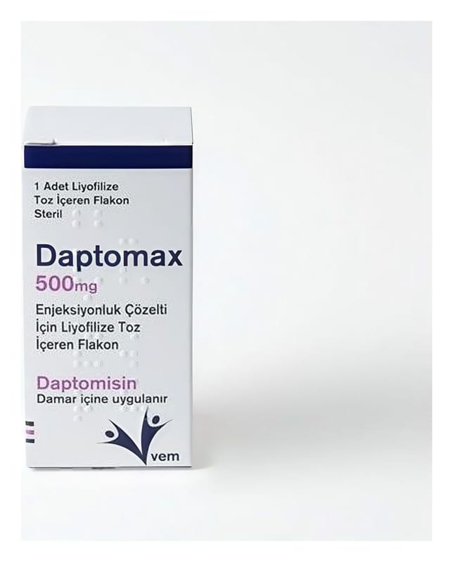

Daptomax 500 mg Enjeksiyonluk Çözelti İçin Liyofilize Toz İçeren Flakon

Ne için kullanılır
KT · Bölüm 1DAPTOMAX, daptomisin adı verilen etkin madde içeren bir ilaçtır. DAPTOMAX, açık sarıdan açık kahverengiye liyofilize toz halinde 500 mg daptomisin etkin maddesini içeren bir adet renksiz cam flakon içeren ambalajlar halinde kullanıma sunulmaktadır. Daptomisin, belirli bakterilerin büyümesini durdurabilen bir antibakteriyeldir. DAPTOMAX, yetişkinlerde, çocuklarda ve ergenlerde (1-17 yaş arası) deri ve deri altındaki dokulardaki enfeksiyonları tedavi etmek için kullanılır. Deri enfeksiyonu ile ilişkili olduğunda kandaki enfeksiyonları tedavi etmek için de kullanılır.
Ayrıca yetişkinlerde, Staphylococcus aureus adı verilen bir bakterinin neden olduğu kalbin içini kaplayan dokulardaki (kalp kapakçıkları dahil) enfeksiyonları tedavi etmek için kullanılır. Ek olarak, kalp enfeksiyonu ile ilişkili olduğunda aynı tür bakterilerin neden olduğu kandaki enfeksiyonları tedavi etmek için de kullanılır. Sahip olduğunuz enfeksiyonun türüne bağlı olarak, DAPTOMAX ile tedavi görürken doktorunuz başka antibakteriyeller de yazabilir.